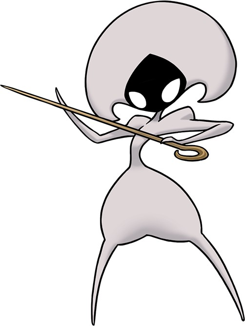
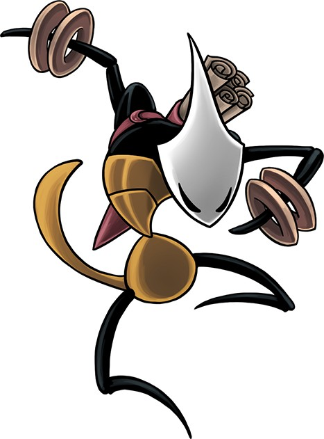
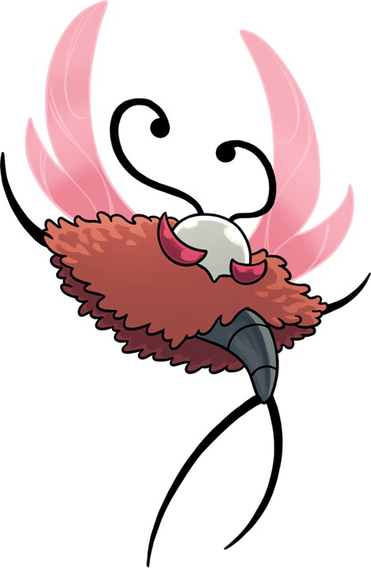
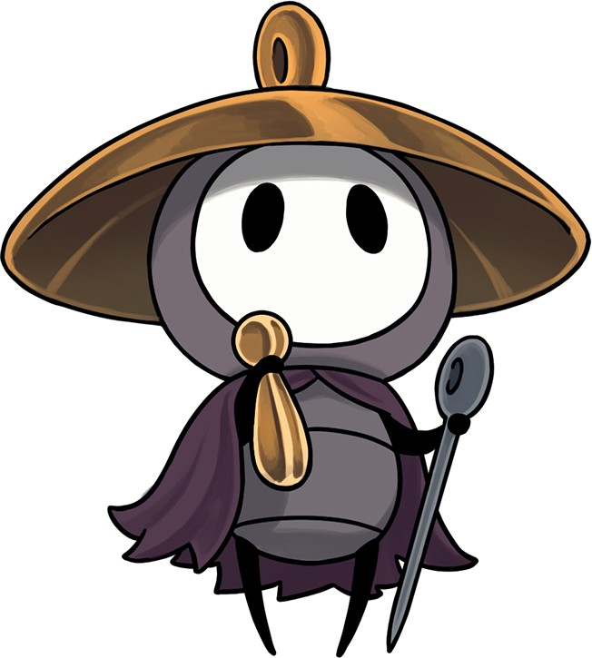

Hollow knight: Silksong
Es un juego de acción y aventuras desarrollado y publicado por Team Cherry.
Es una secuela del juego Hollow Knight, aclamado por la crítica, y presenta un nuevo personaje
jugable llamado Hornet.

24.99€
Personajes:
Lace
Un esgrimista esbelto empuñando un alfiler dorado, el arma tradicional de Pharloom. Lace es un enemigo peligroso, cubierto de misterio, que se deleitará con la rápida y torpe desaparición de Hornet.

Shakra
Feroz e intimidante, Shakra es una guerrera que busca a su maestro, quien desapareció bajo extrañas circunstancias. El clan de Shakra son luchadores hábiles que pueden manejar a los suyos en las zonas salvajes del reino. Útil para Hornet, cada miembro del clan también afila un Craft-Skill y el dominio de la cartografía de Shakra será inestimable en la aventura de Hornet.

Trobbio
Maestro del escenario, el pincel y la voz, la extravagante mariposa Trobbio busca la fama y la adoración en todo Pharloom.

Sherma
Un peregrino optimista en un viaje espiritual. El camino de Sherma a menudo se cruza con el de Hornet, pero su falta de combate y destreza acrobática lo pueden llevar a una necesidad desesperada de ayuda.
